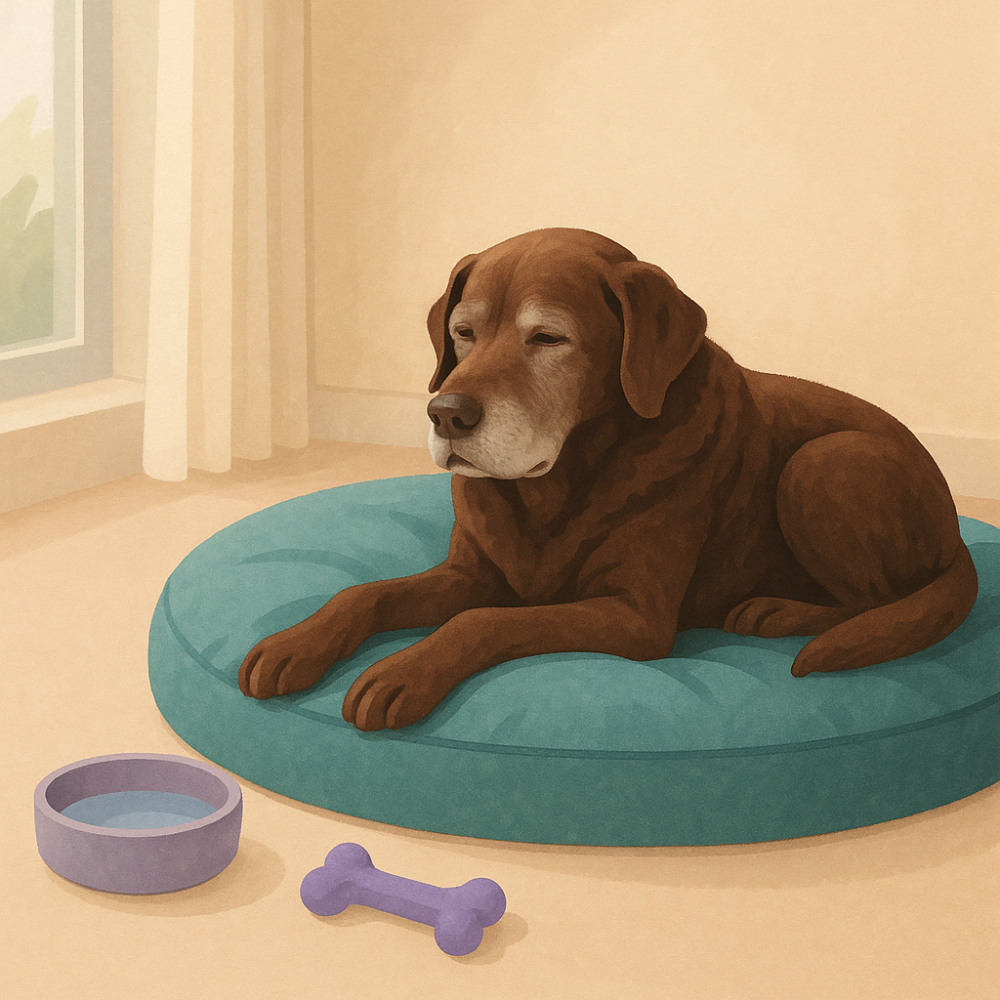
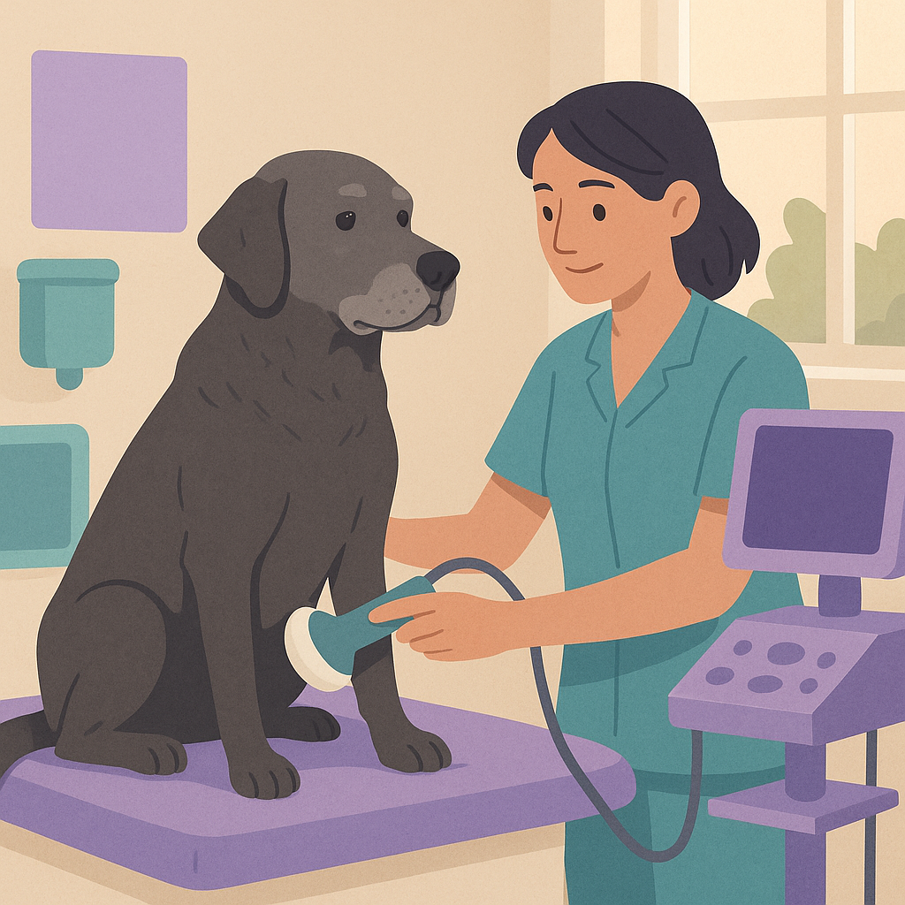

Senior Dog Care — What Changes After Age 8
Contents
Introduction
A dog turning 8 years old isn't officially "senior" until around age 10, but at 8 you'll start noticing changes. Your dog sleeps more, moves a bit stiffer, maybe their coat looks duller. These aren't just signs of aging — they're signals that your dog needs adjustments to stay comfortable and healthy.
Good news: many age-related problems are manageable. Proper nutrition, regular vet checks, supplements, and lifestyle adjustments can keep your senior dog thriving for years. The key is recognising what's normal aging versus what needs medical attention.
Here's what you need to know about caring for an older dog, from diet changes to managing arthritis, and why lifetime pet insurance becomes especially valuable at this stage.
Quick Summary
Senior dogs (8+) need more frequent vet visits (twice yearly instead of once), dietary adjustments for lower calories and joint support, and careful monitoring for common age-related conditions like arthritis, cognitive decline, and kidney disease. Insurance costs rise significantly for older dogs but become even more important — a single health issue can cost £2,000+.

What Happens at Each Stage
Age 7-8 (Getting Older)
- Noticeably less playful energy
- Greying of muzzle and eyebrows
- Slower to get up after resting (stiffness)
- Slightly harder to concentrate on training
- May sleep 12-14 hours per day
Age 9-10 (Senior)
- Regular stiffness, especially after exercise
- Noticeable cognitive changes (confusion, disorientation)
- Hearing loss (common by age 10)
- Vision decline
- Changes in appetite or eating behaviour
- Increased accidents (incontinence)
Age 11-12+ (Very Senior)
- Significant mobility issues
- Frequent confusion or anxiety
- Incontinence is common
- Vision and hearing significantly reduced
- More frequent health complications
Common Senior Dog Health Issues
Arthritis (Osteoarthritis)
The most common problem in senior dogs. Affects joints, especially hips, knees, and elbows.
Signs: Stiffness, reluctance to jump or climb stairs, limping, difficulty rising after rest
Management:
- Low-impact exercise (short walks on soft ground)
- Anti-inflammatory medications (from vet): from £50–150/month
- Supplements: glucosamine, chondroitin, fish oil (£10–30/month from Pets at Home)
- Orthopedic bed: £40–200
- Physiotherapy: £40–80 per session (if recommended by vet)
Cognitive Dysfunction (Dementia in Dogs)
Dogs become confused, disoriented, or anxious. Often called "Canine Cognitive Dysfunction".
Signs: Getting lost at home, staring blankly, pacing at night, inappropriate toileting, forgetting house training, not recognising family members
Management: Medication (anipryl or similar): £50–150/month; supplements with antioxidants; consistent routine; night lights
Incontinence (House Soiling)
Very common in senior dogs, especially females. Usually manageable.
Management: More frequent toilet breaks; medications (from vet); washable pads; veterinary continence diet
Kidney Disease
Affects many senior dogs. Early signs are subtle (increased drinking, more urination).
Management: Regular blood/urine tests; low-protein diet (prescription or from specialists); medications; fluid support
Dental Disease
Becomes more common with age. Can lead to serious infections.
Management: Regular teeth brushing; professional cleaning if health allows (£200–400)
Vision & Hearing Loss
Usually gradual. Not curable but manageable.
Management: Avoid sudden changes; use hand signals; night lights; patience and routine

Changes to Vet Care
Vet Visits Increase
Once your dog reaches 7-8, move from annual check-ups to twice yearly. At age 10+, consider quarterly visits if health issues arise.
- Consultation cost: £50–100 per visit
- Annual blood work: £80–150 (recommended from age 8 onwards)
- Urinalysis: £30–50
- Dental X-rays if needed: £100–200
Insurance for Senior Dogs
This is where costs become significant:
- Age 7-9: £40–60/month
- Age 10+: £60–120/month or more
- Dogs with pre-existing conditions: Often not insurable at all, or with very high premiums
This is why lifetime insurance matters — you can't get new insurance for pre-existing conditions. If your dog develops diabetes at age 9, a new insurer won't cover it. Lifetime cover (if you've had it from the start) continues covering the condition.
Diet & Supplements for Senior Dogs
Senior Dog Food
Senior-specific foods are formulated with lower calories and added joint support.
- Budget senior kibble (Wafcol, Burns): £15–25 per 12kg bag (lasts 1-2 months)
- Premium senior food (Royal Canin, Hill's): £30–60 per bag
- Fresh food delivery (Tails.com senior range): £2–5 per day
Key Supplements
- Glucosamine & Chondroitin: £10–25/month, supports joints
- Fish Oil/Omega-3: £8–15/month, anti-inflammatory
- Turmeric: £5–10/month, natural anti-inflammatory
- CoQ10: £10–20/month, heart support
Most are available from Pets at Home, Amazon, or specialist pet retailers. Check with your vet before starting new supplements, especially if your dog is on medication.
Calorie Adjustment
Senior dogs need fewer calories as they're less active. Your vet can calculate appropriate portions. Obesity in older dogs accelerates arthritis and joint problems.
Comfort & Lifestyle Adjustments
Environment Changes
- Orthopedic bed: £40–200 (supports arthritic joints). Brands: Scruffs, Tuffies, Bedsure
- Ramps or stairs: £40–150 (prevents jumping, especially for beds/sofas)
- Non-slip floor mats: £15–40 (helps dogs with mobility issues)
- Water & food bowls on raised stands: £20–50 (easier on the neck)
- Night lights: £10–20 (helps with vision loss and disorientation)
Exercise Adjustments
Don't stop exercising your senior dog, but adapt:
- Shorter, more frequent walks (3x 10-minute walks better than 1x 30-minute)
- Soft surfaces (grass, gravel) instead of hard pavements
- No jumping or rough play
- Swimming or hydrotherapy if available (excellent for arthritic joints)
Routine & Safety
- Keep everything in the same place (helps confused dogs)
- Regular toilet breaks (at least 4x daily for incontinent dogs)
- Consistent bedtime and waking time
- Monitor temperature (older dogs struggle with heat and cold)
- Keep gates closed/secure (confused dogs may wander)
Grooming & Hygiene
- More frequent grooming (helps spot skin issues early)
- Nail trims every 4-6 weeks (immobility leads to overgrowth)
- Washable pads or special pants for incontinence (£10–30)
- Sensitive skin shampoo if skin becomes dry (£8–15)
Key Takeaway
Senior dogs (8+) require twice-yearly vet visits instead of once yearly, dietary adjustments, joint supplements, and lifestyle changes like orthopedic beds and shorter walks. Common issues include arthritis, cognitive decline, and incontinence — all manageable with proper care. Insurance costs rise significantly at this age (£40–120/month), but it's essential protection. Lifetime insurance is crucial because pre-existing conditions diagnosed now won't be covered by a new policy. Your senior dog can enjoy years of comfortable, happy living with the right adjustments. Quality care during these years genuinely matters.
Related Guides

Vet Bills UK — What Should You Expect to Pay?
Real prices for common vet procedures, emergency costs, and how to prepare financially. Plus guidance on when pet insurance makes sense.
Read
How to Protect Your Dog From Ticks, Fleas and Worms
Seasonal parasite prevention guide with product recommendations, costs, and when to see your vet. Keep your dog healthy year-round.
Read
Pet Dental Care — Do You Really Need to Brush Their Teeth?
The truth about pet dental health. What vets recommend, product reviews, cost of dental procedures, and signs of dental disease.
Read